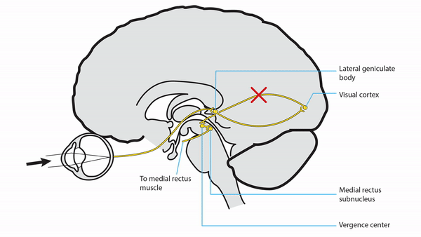
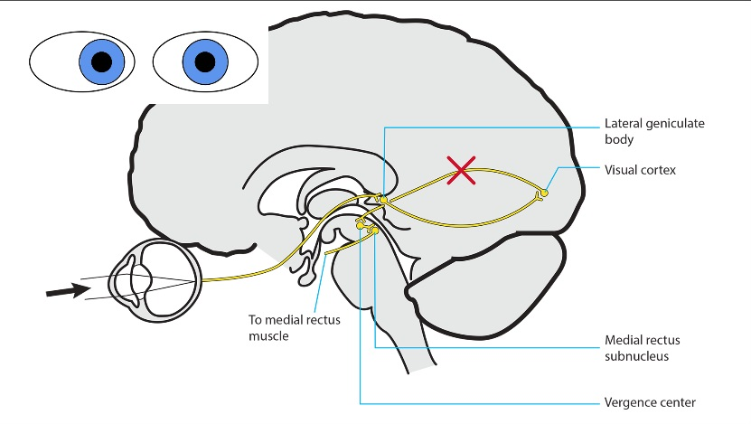
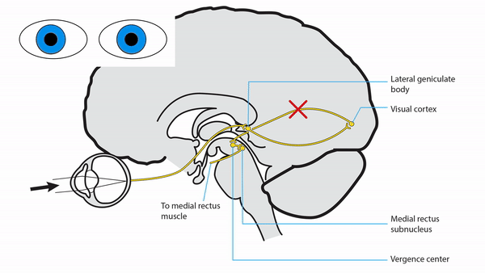
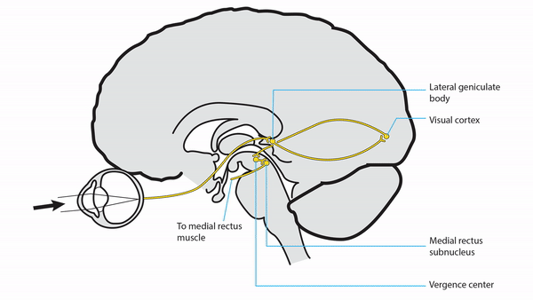
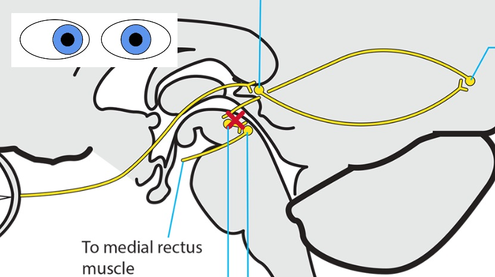
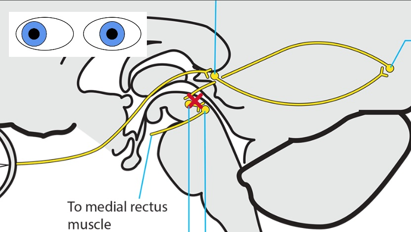
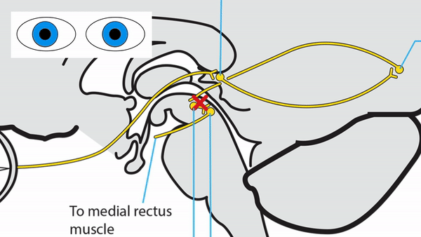

Produces reduced vision, which breaks fusion and causes comitant esotropia
or exotropia
(“sensory ocular misalignment”), but retains full amplitude of ocular ductions
Common cause: any lesion of the visual pathway



Lesion of the descending cerebral pathways from the occipital lobes on both sides
Impairs transmission from the occipital lobes to the brainstem vergence center,
which breaks fusion and causes comitant esotropia
or exotropia,
but retains full amplitude of ocular ductions
Common causes: head trauma, encephalitis, narcotic or other neurotropic medication or drug use, sleep disturbance, fever, and increased intracranial pressure




Lesion of the thalamus or midbrain
Disrupts the brainstem vergence center and causes comitant esotropia
or exotropia,
but retains full amplitude of ocular ductions
Tip:
with a suspected thalamic or midbrain lesion, expect to find one or more of these clinical abnormalities
Impaired vertical gaze
Skew deviation
Lid retraction
Impaired pupil constriction to light with or without light-near dissociation (tectal pupils)